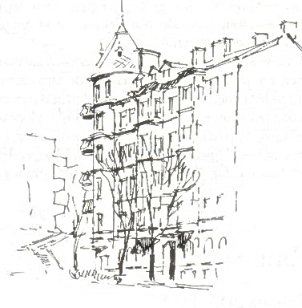
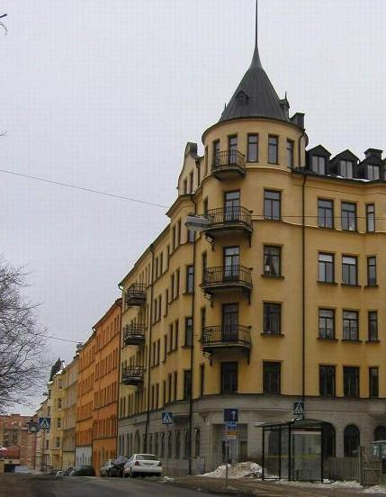
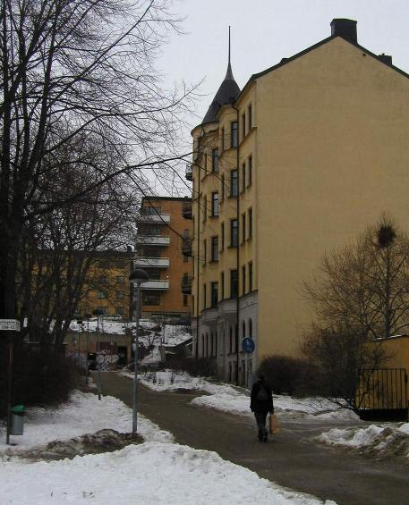
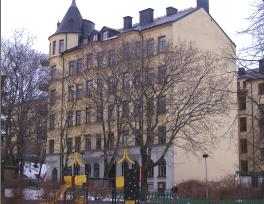
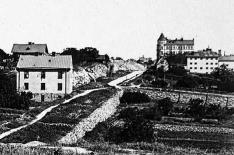

Södermalm i tid och rum
.
Pang i bygget! Ansgariegatan 1
.
.
|
Norr om Wirwachska malmgården och i hörnet av Lundagatan ligger Ansgariegatan 1. Det är ett stabilt,
tornprytt stenhus av sekelskiftestyp, uppfört under åren 1903-1906 för Stockholms Byggnads AB med N J
Nilsson som arkitekt. Byggherren svarade också för husen Lundagatan 35,37 och 39, byggda åren strax
innan. Stockholmarnas trångboddhet var då fortfarande stor. De flesta arbetarfamiljer på Söder fick hålla till godo med ett rum och kök. Från politiskt håll fanns en medveten styrning mot enrumslägenheter åt arbetare. Det lilla utrymmet skulle inte ge plats för inneboende, trodde man ... Det hindrade inte att lägenhetsinnehavare med familj trängde ihop sig i köket för att hyra ut bostadsrummet till inneboende. Ansgariegatan 1 hade emellertid generöst tilltagna utrymmen. Fastigheten innehöll 1907 enbart fem- och trerumslägenheter. Entrén välkomnade besökare som kungligheter på röd matta, fasthållen av välputsade mässingsstänger. |
 |
Golv och trappor var belagda med vit marmor. Hiss och elbelysning fanns från allra första början. De större lägenheterna kostade över tusen kronor om året. In i huset flyttade på hösten 1907 min pappa, förre verkmästaren vid Lagerholms Tryckfärgsfabrik, Ernst Rydberg med sin familj. Efter en lång vistelse i Tyskland återkom han nu till Stockholm, som han inte sett på sex år. Det var i många stycken en annan stad än den han lämnat.
Norge hade skilts från Sverige och unionsflaggan skulle aldrig mer vaja över Norden. Det nya Riksdagshuset, häcklat av esteter, stod på plats och i bruk sedan ett år tillbaka. Staden hade fått en annan rytm, där det nya transportmedlet bilen gjort intrång. De strävsamma hästarna hade försvunnit från spårvagnarna som i stället drogs av elektriska motorer med kraft från ovan. När Rydbergarna anlände med tåget till huvudstaden, mor, far och fyra barn, satte de sig för hemfärden i en nymodig droskbil med tickande taxameterlåda vid sidan om vindrutan. Bilarna hade kommit in i Stockholms trafikliv och skulle breda ut sig över hela landet inom några decennier. Ännu en tid framåt fick stockholmarna dock se påpälsade farbröder på kuskbocken som tog åkarbrasor i kylan. Men också bilarna var om vintern iskalla. Uppvärmda taxibilar kom inte förrän en bit fram på tjugotalet. Pionjärerna var amerikanska Yellow cabs.
|
 Lundagatan österut. Hörnet Ansgariegatan 1. 2003 |
Droskbilen med den återvändande lyckliga familjen for genom Gamla Stan uppför Slussbacken och Hornsgatan
fram genom den nya nedsänkta passagen förbi Puckeln, detta hinder som alla ville ha bort snarast. Vidare gick
färden fram mot det genomsprängda Ansgarieberget och in på nybildade Ansgariegatan. På Lundagatan, framför
nybygget i kvarteret Bjälken, stannade bilen för att släppa av sina passagerare. Här skulle de nu bo i sitt nya hem
två trappor upp. De tittade upp mot "sin" balkong som följde rundningen i hörnet mot Ansgariegatan. Vilken lättnad att åter vara i hemlandet och inte behöva anstränga sig med att tala tyska. De behövde en tid för att vänja sig vid vänstertrafik igen. Femrummarens matsal hade fönster mot Lundagatan medan det balkongförsedda hörnrummet gav utsikt också mot Ansgariegatan, längs vilken de tre övriga rummen låg. Ett långt serveringsrum skilde matsalen från köket, som hade fönster mot gården och söderläge. Matsal och hörnrum var åtskilda genom en skjutdörr. I köket fanns vedspis och ett tvålågigt fristående enkelt gaskök av svart gjutjärn. I en utdragssoffa i köket fick jungfrun ligga. Jungfru skulle man ha om man tillhörde medelklassen, det var inget märkvärdigt med det. |
Uppvärmningen av rummen skedde över kakelugnar med Solid-insatser för koks-eldning, som kunde hålla värmen hela natten utan påfyllning eller tillsyn. Tamburen var utrustad med en kamin, som eldades med antracit. I matsalen förhöjdes måltidens glädje genom den underbara utsikten över Riddarfjärden och Stockholm. De kunde följa årstidernas och vädrets skiftningar dag för dag. På en grammofonskivestor rund stjärnkarta lärde sig barnen att orientera sig om himlavalvet som lyste med miljontals små lysande prickar i universum. Tore var förstås den som bäst kände igen Zodiakens olika figurer. Flickorna fördjupade sig inte så mycket i astronomin. Området ner mot Yttersta Tvärgränd var en fri och öppen lekplats där ungarna om vintern roade sig med kälkåkning.
Ett ganska stort fönsterlöst badrum med trätrall på svart asfaltgolv hörde också till bostaden, liksom torrklosett vid tamburen. När den skulle tömmas kallades på budaren, som bytte det fyllda kärlet mot ett tömt och rengjort. Proceduren existerar än i dag på sina ställen i Stockholm där moderniseringen legat efter, men 1983 fanns blott en enda budare kvar i hela staden.
|
Skulle hyresgästerna bada måste det ske på lördagarna. Första tiden kom varmvatten från en särskild
cistern i husets källare, men det var endast på lördagarna som portvakten satte fyr under pannan. En kall
vinterlördag på 1910-talet skakades Ansgariegatan 1 av en explosion, som kom hela huset att vibrera och
skräckslagna hyresgäster att fråga sig vad som hänt. Hela gården täcktes snart av en kompakt Lützendimma
(av ånga). Det visade sig att portvakten i vanlig ordning hade tänt värmepannan till varmvattencisternen. Vad han inte visste var att vattnet i rörledningarna under senaste avstängningen
frusit till. Han hann ut på gården innan det small. Pannan hade flugit i luften! Lyckligtvis kom ingen till
skada. De som väntade på sitt invanda lördagsbad fick ställa in förberedelserna. Någon ny panna sattes aldrig
in. Genom att på egen bekostnad inleda gasbrännare och sätta upp separat varmvattencistern i badrummet,
kunde de som så önskade även i fortsättningen ta sina bad.
Hyran var hög och hyresgäster flyttade ut och nya kom in. En tid var det outhyrt ovanför såväl som inunder Rydbergs lägenhet, varför bostaden förblev kall hur de än eldade. |
 Ansgariegatan norrut. Lundagatan i bakgrunden. Nr 1 längst bort till höger. 2003 |
Bland hyresgästerna på 1910-talet fanns en lärare i Maria folkskola, som hette Edkvist. En dotter till honom var klasskamrat med en av flickorna Rydberg. En annan barnfamilj var ingenjör Kährs. Fyra trappor upp bodde en sjökapten med två vackra döttrar. Den ena av dem blev varuhusdirektören Meeths hustru. Den i Stockholm på sin tid välkände fotografen Jan de Meyere bodde i huset en tid innan han nått vidare berömmelse som porträttfotograf. En annan konstnär hörde också till hyresgästerna, skulptören Börje Börjeson, som hade sin ateljé i matsalen. Han var son till den berömde John Börjeson, vilken bland annat skapade ryttarstatyn av Karl X Gustav i Malmö.
Ernst Rydberg hade en lång väg till arbetet i Lagerholms Färgfabrik vid Gröndal och cyklade när det gick för sig. Spårvagnen gick inte längre än till Hornstull så länge den gamla flottbron fanns kvar. Över den provisoriska svängbron av trä, som öppnades 1915, drogs senare spårväg fram. Direkt linje till Gröndal kom dock inte förrän 1923, långt efter det att familjen flyttat ut till Nynäs.
|
 |
De verkliga högtidsstunderna för Lagerholms fabriksföreståndare var när hans musikvänner Sven Kjellström, Gösta Annell och Lars Zetterquist kom upp och spelade kammarmusik tillsammans med makarna Lidberg från Äppelviken. Lidberg var mariningenjör, men också duktig violinist och hans fru skicklig pianist. Musikkunniga känner till Kjellström och Zetterquist, vilka bägge blev violinprofessorer på Musikaliska akademin. Den förre gjorde sig tidigt riksbekant för sina omfattande musikturnéer landet runt och för sin insats på spelmansfronten. |
Framför entrésidan på Ansgariegatan 1 stod fortfarande in på 1920-talet kvar den hattaskliknande fabriksbyggnad som vi finner på Neuhaus' karta från 1870-talet. Under 1910-talet inrymde lokalerna en mekanisk verkstad. Det var här som Friestedts Bensvärt- och Benmjölsfabrik tidigare gjorde livet surt för omgivningen fram till 1894 då utflyttningen till Nynäskvarteren vid Trekanten skedde. Den nya fabriken som byggdes i Gröndal var just den byggnad som
|
Lagerholms Färgfabrik övertog 1901 och där Ernst arbetade
som fabriksföreståndare efter hemkomsten från Tyskland. Ansgariegatshuset var en utpost för stenstaden som långsamt åt sig fram ner mot Homstull. Men det bortsprängda Ansgarieberget var som en osynlig mur mot bebyggelse. Länge stod den oordnade oregelbundna hopen av kåkar och halvhjärtade stenhus med fula brandgavlar kvar i Högalids- och Heleneborgsområdet. |
 Lundagatan från väster. Nuv Ansgariegatan 1 reser sig i fjärran |
.